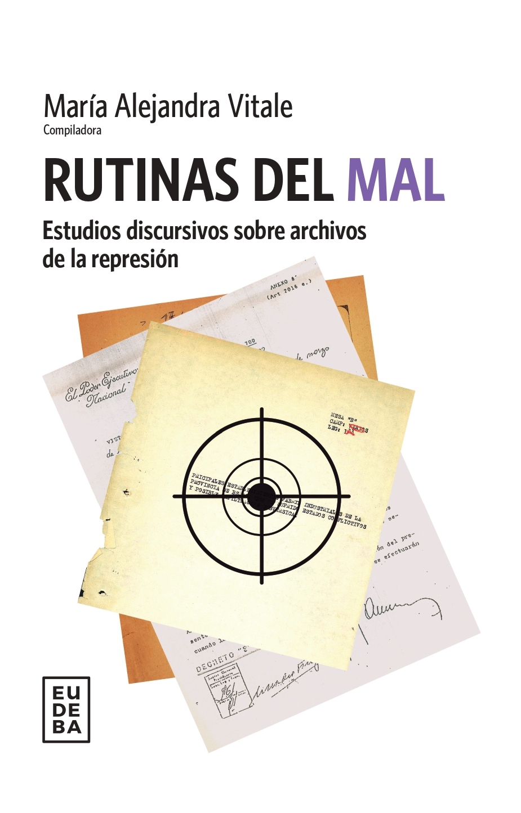

Grupo de investigación en
Archivos de la represión
El Grupo de Investigación en Archivos de la Represión (GIAR) estudia los archivos de la represión desde el análisis del discurso como campo interdisciplinario, y se interesa tanto en su dimensión verbal, icónica como multimodal. Está integrado por investigadores formados, en formación y becarios, que tienen a la Universidad de Buenos Aires como principal espacio de adscripción institucional.

Objetivos
- Colaborar con la memoria social crítica sobre la represión en la Argentina.
- Contribuir al conocimiento de las ciencias sociales sobre los archivos de la represión.
- Aportar a los estudios de las comunidades discursivas, las memorias discursivas, el ethos y el antiethos.
- Caracterizar los regímenes escópicos de las comunidades dedicadas al espionaje político-ideológico.